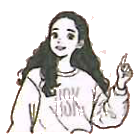

课文 2Text 2Текст 2
在校园里，陈天中和白家月打招呼时认错了人。On campus, Chen Tianzhong greeted Bai Jiayue but mistook her for someone else.В кампусе Чэнь Тяньчжун поздоровался с Бай Цзяюэ, но принял её за кого-то другого.
朗读对话。Read the dialogue aloud.Прочитайте диалог вслух.
 Chén Tiānzhōng陈天中
Chén Tiānzhōng陈天中你好，安妮！
 Bái Jiāyuè白家月
Bái Jiāyuè白家月你好，陈天中！我不
是安妮，我是白家月。
是安妮，我是白家月。
Chén Tiānzhōng陈天中对不起！
Bái Jiāyuè白家月没关系！
生词New WordsНовые слова
⑦不bùadv.нареч.not; noне; нет
⑧是shìv.гл.beбыть, являться
⑨对不起duìbuqǐv.гл.sorryизвините
⑩没关系méi guānxiv.гл.that's all right; never mindвсё в порядке; неважно
⑪没事méishìv.гл.it doesn't matterничего страшного

Chen Tianzhong: Hello, Annie!
Bai Jiayue: Hello, Chen Tianzhong! I'm not Annie—I'm Bai Jiayue.
Chen Tianzhong: Sorry!
Bai Jiayue: It's okay!
Чэнь Тяньчжун: Привет, Анни!
Бай Цзяюэ: Привет, Чэнь Тяньчжун! Я не Анни — я Бай Цзяюэ.
Чэнь Тяньчжун: Извини!
Бай Цзяюэ: Всё в порядке!
分角色朗读对话。Role-play the dialogue.Разыграйте диалог по ролям.
两人一组，用真实姓名对话。Work in pairs and have a dialogue using your real names.Работайте в парах и разыграйте диалог, используя свои настоящие имена.
007